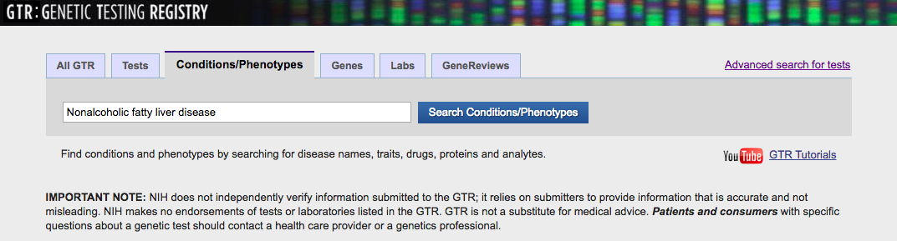
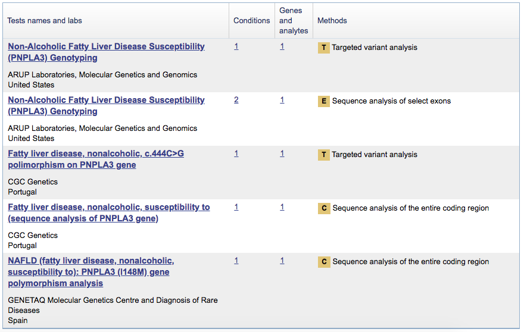

2. Using the Genetic Testing Registry to find genes¶
As an example, we illustrate using the Genetic Testing Registry (GTR) to identify a list of genetic tests for nonalcoholic fatty liver disease (NAFLD).
First, users must visit the GTR website and query for conditions and/or phenotypes of interest. In this example, we type in NAFLD as shown in the figure below.
{kind=link}
The search will bring users to its phenotype entry in GTR. The panels that may be used for this phenotype are found by clicking the first link in the Available tests section. A table with a list of test names will be returned. Clicking the Genes and analytes option will show genes included in these gene panel test (GPT).

PNPLA3 is the gene associated with NAFLD and included in five GTR registered genetic testings. Before deciding whether to recommend whole exome sequencing (WES) or genetic testing panels, users may check the breadth of coverage for PNPLA3 to see if the gene is comprehensively covered by WES.
{kind=link}